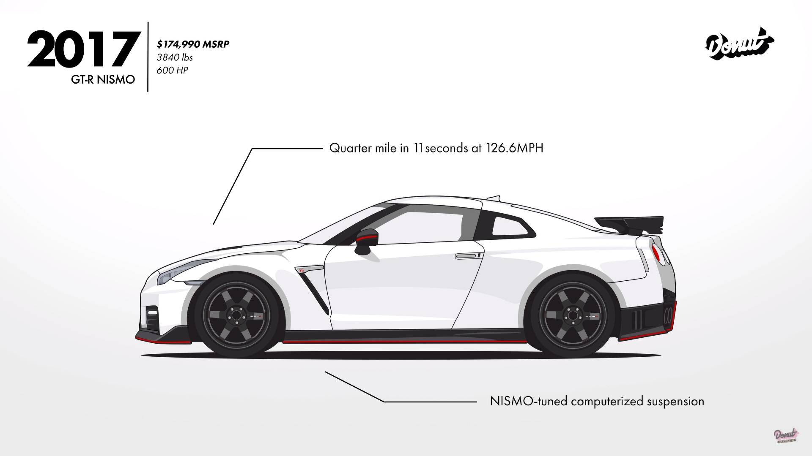
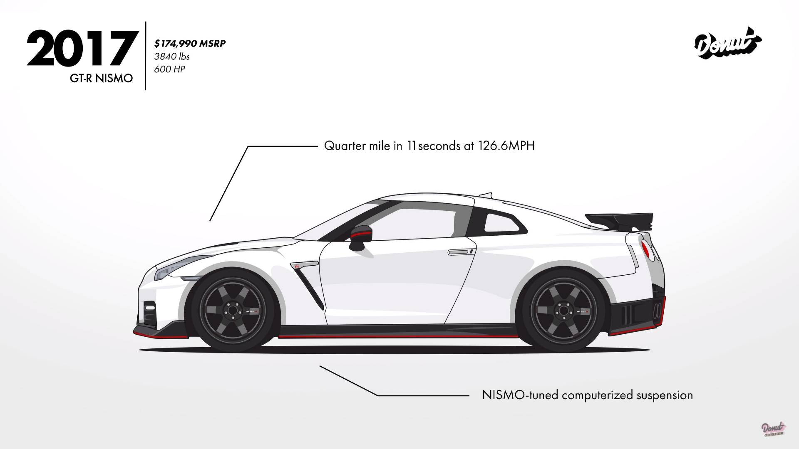

Skyline GT-R
First launched in 1969, the “Hakosuka” GT-R as it was affectionately called (“hako” meaning boxy, “suka” coming from the Japanese pronunciation of Skyline) was a rare sight. Nissan only built 1945 of them. And today, estimates put the number of original GT-Rs remaining on Japan’s streets at about 500.
In the U.S. now, 28-year-old Nissan Skyline R32 GT-Rs are selling for silly prices. Try upwards of $75,000 for well-maintained versions. The iconic sports car, known for its race-winning performance and originally launched in 1989, has found a small if not strong fan base in America. But if you thought this was the first-ever GT-R, then think again. Some 20 years earlier, Nissan had launched the ‘real’ original GT-R, called the 2000 GT-R, and today these rare beasts, in its home market of Japan at least, are fetching northwards of $150,000.
Image of the first generation Skyline GT-R:


 
